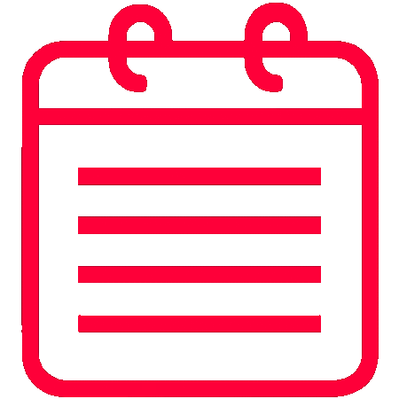

Tainá Valentim de Lima
Desenvolvedora FullStack Júnior
- 
Sobre Mim
Olá! Seja bem-vindo(a) ao meu portifólio! Eu sou a Tainá!
Me apaixonei pela programação aos 19 anos, quando sai de um curso de engenharia na faculdade para estudar Análise e Desenvolvimento de Sistemas.
Sempre tive o sonho de trabalhar com programação e já possuo boas habilidades em HTML, CSS, JavaScript, Python, Ruby, C, C++, C#, Java, VB.NET e scripts MySQL. Além de conhecimento em frameworks como ASP.NET Core, Django, Vue, React e Bootstrap.
Sou uma pessoa bem-humorada, sou apaixonada por gatos, adoro assitir filmes e séries, ouvir música e jogar sudoku.